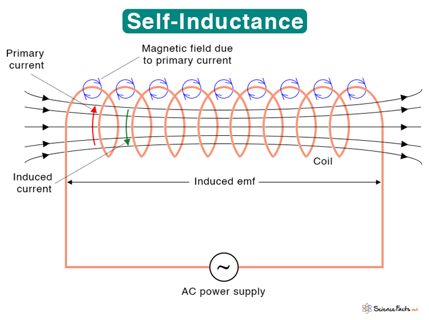

← Back to Electromagnetic Induction
Self-Inductance and Inductors
Overview of Self-Inductance
Self-inductance is the property of a circuit element that opposes changes in current. When the current through an inductor changes, it induces an electromotive force (emf) that opposes the change. This is a fundamental property of inductors and is crucial for understanding time-varying circuits.
Inductors store energy in their magnetic fields and are essential components in filters, oscillators, and power supplies. Understanding self-inductance is key to analyzing LR circuits and electromagnetic devices.
Self-Inductance Definition

The yellow lines are the wire while the black arrows signify the magnetic field.
In this image, the top and bottom of the coils are producing magnetic fields. The magnetic field OUTSIDE are being canceled out because they are going in the opposite direction. The magnetic field inside are doubling in strength due to the magnetic field from the current on the top and bottom of the current.
Key Concepts
Induced EMF in Inductors
When the current through an inductor changes, it induces an emf:
\[ \mathcal{E} = -L\frac{dI}{dt} \]
The negative sign indicates that the induced emf opposes the change in current (Lenz's Law).
- Increasing current: induced emf opposes the increase
- Decreasing current: induced emf opposes the decrease
- Constant current: no induced emf
Time Constant
For LR circuits, the time constant is:
\[ \tau = \frac{L}{R} \]
This determines how quickly the current changes in the circuit.
- Larger L: slower current changes
- Larger R: faster current changes
- After τ seconds: current reaches 63% of final value
Factors Affecting Inductance
The inductance depends on:
- Number of turns (N): L ∝ N²
- Cross-sectional area (A): L ∝ A
- Length (l): L ∝ 1/l
- Core material: L ∝ μ (permeability)
For a solenoid: \(L = \frac{\mu_0N^2A}{l}\)
Physical Meaning
Self-inductance measures how much magnetic flux is linked to a circuit per unit current. It represents the "inertia" of the circuit to current changes.
- High inductance: resists current changes
- Low inductance: allows rapid current changes
- Units: Henrys (H) = Wb/A
- 1 H = 1 Wb/A = 1 V⋅s/A
Formula Derivations (Not on AP Equation Sheet)
Derivation 1: Induced EMF Formula
Derive: \(\mathcal{E} = -L\frac{dI}{dt}\)
Step-by-Step Derivation:
- By definition: \(L = \frac{N\Phi_B}{I}\)
- Therefore: \(N\Phi_B = LI\)
- When current changes: \(\frac{d(N\Phi_B)}{dt} = L\frac{dI}{dt}\)
- By Faraday's Law: \(\mathcal{E} = -\frac{d(N\Phi_B)}{dt}\)
- Substitute: \(\mathcal{E} = -L\frac{dI}{dt}\)
Result: \(\mathcal{E} = -L\frac{dI}{dt}\) (NOT on equation sheet)
Derivation 2: Time Constant Formula
Derive: \(\tau = \frac{L}{R}\)
Step-by-Step Derivation:
- In an LR circuit: \(V = IR + L\frac{dI}{dt}\)
- When switch is closed: \(V = IR + L\frac{dI}{dt}\)
- Rearrange: \(\frac{dI}{dt} = \frac{V - IR}{L}\)
- This is a first-order differential equation
- Solution: \(I = \frac{V}{R}(1 - e^{-t/\tau})\) where \(\tau = \frac{L}{R}\)
- The time constant determines the rate of current change
Result: \(\tau = \frac{L}{R}\) (NOT on equation sheet)
Derivation 3: Solenoid Inductance
Derive: \(L = \frac{\mu_0N^2A}{l}\) for a solenoid
Step-by-Step Derivation:
- Magnetic field in solenoid: \(B = \mu_0nI = \mu_0\frac{N}{l}I\)
- Flux through one turn: \(\Phi_B = BA = \mu_0\frac{N}{l}IA\)
- Total flux linkage: \(N\Phi_B = \mu_0\frac{N^2}{l}IA\)
- By definition: \(L = \frac{N\Phi_B}{I} = \mu_0\frac{N^2A}{l}\)
Result: \(L = \frac{\mu_0N^2A}{l}\) (NOT on equation sheet)
Example Problems
Example 1: Calculating Self-Inductance
Problem: A solenoid has 500 turns, length 0.1 m, and cross-sectional area 0.001 m². What is its self-inductance?
Solution:
- Use solenoid formula: \(L = \frac{\mu_0N^2A}{l}\)
- Substitute values: \(L = \frac{(4\pi \times 10^{-7})(500)^2(0.001)}{0.1}\)
- Calculate: \(L = \frac{(4\pi \times 10^{-7})(250000)(0.001)}{0.1}\)
- Result: \(L = 3.14 \times 10^{-3} \text{ H} = 3.14 \text{ mH}\)
Answer: The self-inductance is 3.14 mH.
Example 2: Induced EMF
Problem: The current through a 2 H inductor changes from 3 A to 7 A in 0.5 seconds. What is the induced emf?
Solution:
- Calculate current change rate: \(\frac{dI}{dt} = \frac{7 - 3}{0.5} = 8 \text{ A/s}\)
- Use induced emf formula: \(\mathcal{E} = -L\frac{dI}{dt}\)
- Substitute: \(\mathcal{E} = -(2)(8) = -16 \text{ V}\)
- The negative sign indicates the emf opposes the current increase
Answer: The induced emf is -16 V.
Example 3: Time Constant
Problem: An LR circuit has L = 0.5 H and R = 2 Ω. What is the time constant?
Solution:
- Use time constant formula: \(\tau = \frac{L}{R}\)
- Substitute: \(\tau = \frac{0.5}{2} = 0.25 \text{ s}\)
- After 0.25 s, current reaches 63% of final value
- After 5τ = 1.25 s, current reaches 99% of final value
Answer: The time constant is 0.25 seconds.
Applications of Inductors
- Filters: High-pass and low-pass filters in electronic circuits
- Oscillators: LC circuits for generating alternating current
- Power Supplies: Smoothing current variations in DC power supplies
- Transformers: Core component in voltage transformation
- Magnetic Storage: Used in magnetic recording devices
- Induction Heating: Used in induction cooktops and industrial heating
Quick Quiz: Self-Inductance
1. What is the unit of self-inductance?
Ohm (Ω)
Henry (H)
Farad (F)
Tesla (T)
2. When current through an inductor increases, the induced emf:
Aids the increase
Opposes the increase
Has no effect
Depends on the inductance
3. If you double the number of turns in a solenoid, the inductance:
Doubles
Quadruples
Halves
Stays the same
4. What is the time constant for L = 2 H and R = 4 Ω?
5. The induced emf in an inductor is proportional to:
The current
The rate of change of current
The voltage
The resistance
Learning Objectives
- Define Self-Inductance: Understand the relationship between inductance, flux, and current
- Calculate Induced EMF: Use the formula \(\mathcal{E} = -L\frac{dI}{dt}\)
- Determine Time Constants: Calculate \(\tau = \frac{L}{R}\) for LR circuits
- Analyze LR Circuits: Understand current behavior in inductor-resistor circuits
- Apply to Real Devices: Connect theory to practical inductor applications
Key Takeaways
- Opposition Principle: Inductors oppose changes in current
- Time Dependence: Current changes exponentially in LR circuits
- Energy Storage: Inductors store energy in magnetic fields
- Time Constant: Determines how quickly current changes
- Applications: Essential in filters, oscillators, and power supplies